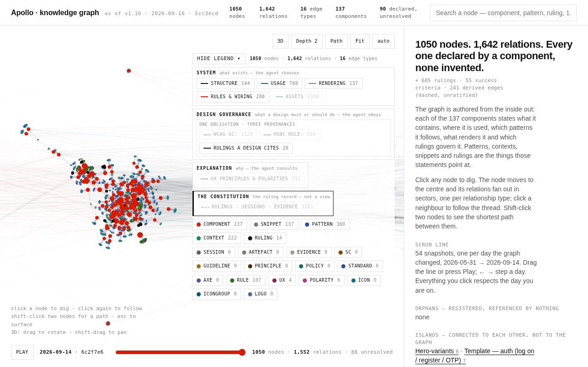

Apollo · knowledge graphExplorer 1.17 · 2026-09-16 · one option, for your eye
The question
The graph, laid out as three visible layers.
You said the last one did not look like three layers — that relabelling and grouping
the chips was not what you expected. This is the layout instead of the labels: one stage, three
horizontal bands, one per view, with the Constitution as a fourth band beneath them. Same graph,
same nodes, same left-to-right positions. Only the vertical changed.
1Nothing moved sideways: every node keeps the exact x the force layout gave it, so the clusters and the family columns are where they were.
2What moved is y — each node is now packed inside the band for its own view, so Explanation sits above Design governance, which sits above System, with the Constitution as the bedrock beneath.
3The lines that cross a band boundary are drawn brighter than the ones that stay inside a layer, because the crossings are the thing the picture is for.
The two layouts, chips at the page defaults
Nothing is switched on beyond what the page opens with: the System layer only.

1.16 force · light — fit scale 0.2787, 1050 nodes 1,642 relations 16 edge types 137 components 90 declared, unresolved
Strata · dark — fit scale 0.0834, 3210 nodes 4,903 relations 31 edge types 137 components 90 declared, unresolved
Every layer on at once
This is the picture the three bands are for: four layers, and the lines between them.
The wide horizontal gaps are the unrelated column-packing gap from the last round — the off families
still hold their slots on the x axis — and nothing here changes that.
Strata, every layer on · light — fit scale 0.0568, 4611 nodes 8,084 relations 53 edge types 137 components 126 declared, unresolved
What the bands are
Four bands, top to bottom.
A node's band is its view. Each band is the same height; inside it the nodes are
packed by a light force that only ever moves them vertically, so the horizontal order survives
untouched.